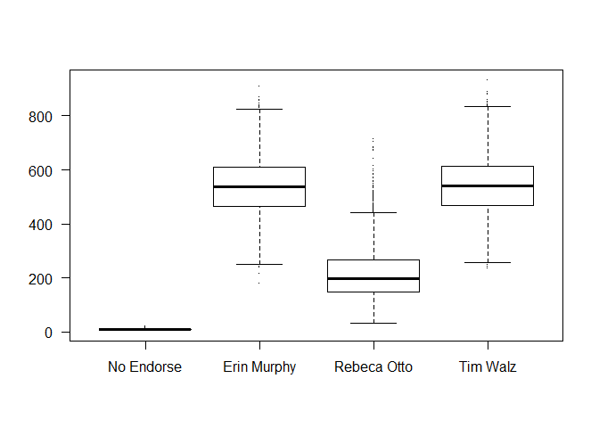
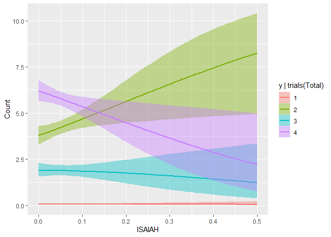
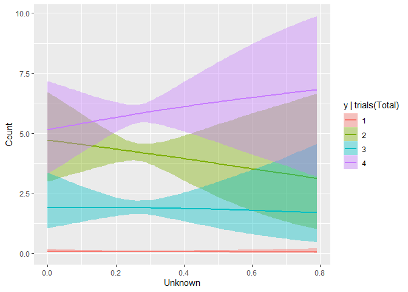
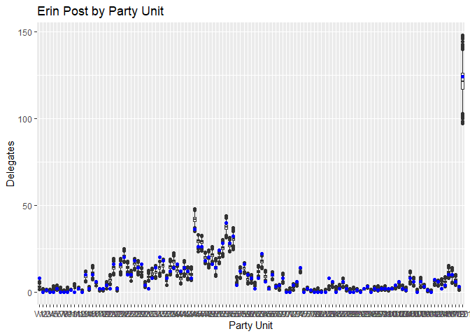
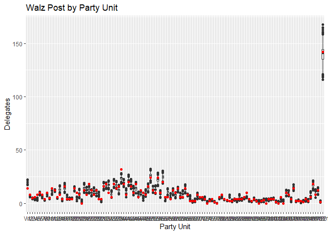

Here, I use a Bayesian hierarchical multinomial model to predict the first ballot results at the 2018 DFL (Democratic) State Convention, with data aggregated to the Party Unit level (ex: State Senate district) to guarantee anonymity. While using aggregated data obviously isn’t ideal, this sort of strategy shows a lot of promise, especially if individual level predictors could be harnessed as another level of the hierarchical model. As it stands, this is mostly a proof of concept for Bayesian hierarchical models in this context. To use something like this in practice, one could use prior predictive simulation to game out the convention under various assumptions, or condition on the first ballot data and use it to analyze trends in support and predict subsequent ballots as your floor team collects further data.
At this convention, I was working for Erin Murphy (who ultimately won) on her data team, and so I have access to their database on the Delegates heading into the convention. A winner is declared if any candidate reaches 60% of the Delegate pool of 1307.5 Delegates, so 785 votes. For simplicity, I focus in this project solely on predicting the first ballot results.
Briefly, my goals with this project are:
- Represent my pre-convention uncertainty about outcomes given the data we have intelligently.
- See how much we can improve predictions by exploiting the hierarchical nature of districts (Party Units within Congressional Districts).
- See if this makes sense as a modeling strategy to keep developing by adding the individual level data.
The Dataset
For each of the non-empty 121 Party Units in Minnesota, my response is the number of Delegate that each candidate (Erin Murphy, Rebecca Otto, and Tim Walz) received, along with a count for “No Endorsement” voters. Thus, summing across the 121 PUs would give the full first ballot results by candidate. I thus model these using a multinomial logit model in brms.
In terms of predictors, we have the Congressional district each party unit is in, which should explain some variation, as Otto/Walz are generally perceived to be more appealing to rural voters, while Murphy was from the Twin Cities. I also have the estimated proportion of Delegates the Murphy campaign believed they had the support of in each Party Unit, based on their field campaign, and on the subcaucuses the Delegates were elected out of. These proportions turned out to be quite accurate, and so my assumption is they’ll be strong predictors. Using the delegate level data (including issue and candidate IDs, subcaucuses, and voter file information like gender and age) would no doubt significantly improve things.
I exclude the data cleaning here, but it’s available in the .Rmd on my github. One non-obvious transformation I make is to double all counts before modeling, but halve them before analysis, as some rural, low population areas are awarded “half delegates”, and I need integer outcomes to work with a multinomial model.
Prior Predictive Simulation: Intercept Only
I start with an intercept only model, and plot realizations of the first ballot across draws. This helps explain my level of uncertainty before we include predictors and condition on the data. To keep this post short, I only include the final result of iterating to find suitably cautious priors at this early stage, not as I add further predictors to the model. With a multinomial model like this, even just enforcing the count constraint (vote counts in each party unit have to add to their total allocation of delegates) already produces a suprisingly reasonable model.
For context on these priors, there was a relatively large amount of uncertainty for our campaign and all the campaigns heading into first ballot for a variety of reasons. First, we had only ID’d about 2/3 of the delegate body by first ballot. Second, it was becoming increasingly clear that Rebecca Otto didn’t have the delegates to win the convention, so it was possible we’d see a decent portion of her delegates switch sides even before first ballot. Finally, a major statewide c4, ISAIAH, had been telling their delegates to hold off on committing, but the rumor was that they were going to endorse Erin Murphy’s or Otto’s campaign (whichever progressive was more viable), so a large number of Delegates had a preference they didn’t openly state.
All that said, while it was highly unlikely that anyone was going to reach a winning 60% of the delegate pool (785 Delegates) on the first ballot, I did want at least a bit of probability on those outcomes. From our ID data, it looked something like 40%-20%-40% was the most likely outcome for the first ballot, which is how I set the means.
As a final note, voting “No Endorsement” on an early ballot is extremely rare, which is correctly reflected.
# Base class is No-Endorsement
initial_prior <- c(prior(normal(4,.25), class = "Intercept", dpar = "mu2"),
prior(normal(3,.5), class = "Intercept", dpar = "mu3"),
prior(normal(4,.25), class = "Intercept", dpar = "mu4")
)
int_only <- brm(bf(y | trials(Total) ~ 1), family=multinomial(),data=erin_data, prior = initial_prior, sample_prior="only")
linpred <- posterior_linpred(int_only, transform = T)
# Divide by 2 after summing the totals to put back on original delegate count scale
boxplot(apply(linpred, c(1,3), FUN = sumdiv2), pch = ".", las = 1,
names = c("No Endorse", "Erin Murphy", "Rebeca Otto", "Tim Walz"))
Initial Posterior
Now let’s add in our non-CD predictors and condition on our data. I add a N(0,3) prior over all the \beta’s as a weakly informative prior to help the model fit. The model fits well; there are no divergences, all \hat{R} were 1, and I got a good number of effective samples for each parameter.
As we’d expect with so little data, the standard errors are very large compared to the coefficients, but generally point the right ways- the Strong/Lean Erin predictions have a positive influence on Erin’s support (mu2), for example, and similar with Walz (mu4), and Otto (mu2). Later, when I look at marginal plots, I’ll talk more about some of the more interesting coefficients, namely the ISAIAH and Unknown ones.
## Family: multinomial
## Links: mu2 = logit; mu3 = logit; mu4 = logit
## Formula: y | trials(Total) ~ ISAIAH + Lean.Erin + Lean.Walz + Lean.Otto + Strong.Erin + Strong.Otto + Strong.Walz + Undecided + Unknown
## Data: erin_data (Number of observations: 121)
## Samples: 4 chains, each with iter = 2000; warmup = 1000; thin = 1;
## total post-warmup samples = 4000
##
## Population-Level Effects:
## Estimate Est.Error l-95% CI u-95% CI Eff.Sample Rhat
## mu2_Intercept 4.15 1.07 2.07 6.27 4931 1.00
## mu3_Intercept 3.40 1.06 1.40 5.51 5520 1.00
## mu4_Intercept 4.19 1.03 2.14 6.23 5352 1.00
## mu2_ISAIAH 1.59 1.68 -1.71 4.96 5557 1.00
## mu2_Lean.Erin 1.00 1.95 -2.92 4.80 5198 1.00
## mu2_Lean.Walz 0.24 1.99 -3.72 4.10 6179 1.00
## mu2_Lean.Otto -1.74 2.08 -5.67 2.44 5975 1.00
## mu2_Strong.Erin 2.18 1.69 -1.17 5.52 5448 1.00
## mu2_Strong.Otto -1.91 1.71 -5.23 1.54 6238 1.00
## mu2_Strong.Walz -1.70 1.65 -5.03 1.63 5958 1.00
## mu2_Undecided -0.53 1.78 -4.15 3.03 5513 1.00
## mu2_Unknown 0.11 1.55 -2.94 3.17 5267 1.00
## mu3_ISAIAH -0.64 1.74 -3.97 2.82 5673 1.00
## mu3_Lean.Erin 0.73 2.03 -3.34 4.69 4694 1.00
## mu3_Lean.Walz -1.27 2.10 -5.35 2.89 6218 1.00
## mu3_Lean.Otto 3.26 2.14 -0.99 7.40 5679 1.00
## mu3_Strong.Erin -1.22 1.68 -4.51 2.08 5648 1.00
## mu3_Strong.Otto 4.28 1.70 0.94 7.74 5737 1.00
## mu3_Strong.Walz -2.46 1.66 -5.60 0.85 6205 1.00
## mu3_Undecided 0.63 1.74 -2.81 4.06 5264 1.00
## mu3_Unknown 0.42 1.56 -2.56 3.45 6235 1.00
## mu4_ISAIAH -1.86 1.68 -5.10 1.57 5066 1.00
## mu4_Lean.Erin -0.39 1.97 -4.21 3.44 5386 1.00
## mu4_Lean.Walz 1.51 1.98 -2.32 5.48 6163 1.00
## mu4_Lean.Otto -1.28 2.09 -5.41 2.80 6302 1.00
## mu4_Strong.Erin -1.48 1.68 -4.67 1.90 5654 1.00
## mu4_Strong.Otto -2.00 1.70 -5.33 1.47 6029 1.00
## mu4_Strong.Walz 1.46 1.60 -1.65 4.61 5859 1.00
## mu4_Undecided 0.19 1.72 -3.22 3.59 5522 1.00
## mu4_Unknown 1.08 1.51 -1.94 4.07 6072 1.00
##
## Samples were drawn using sampling(NUTS). For each parameter, Eff.Sample
## is a crude measure of effective sample size, and Rhat is the potential
## scale reduction factor on split chains (at convergence, Rhat = 1).Nesting the Party Units in CD
A next logical step for the model would be to incorporate the hierarchical structure present in the data- Party Units nested within Congressional Districts. Given that the CD’s reflect both the progressive/moderate and rural/urban divides that defined the election, expecting some significant between group variation is reasonable.
final_prior <- c(prior(normal(4,.25), class = "Intercept", dpar = "mu2"),
prior(normal(3,.5), class = "Intercept", dpar = "mu3"),
prior(normal(4,.25), class = "Intercept", dpar = "mu4"),
prior(normal(0,3),class = "b"),
prior(normal(0,.2), class = "sd", group = "CD", dpar = "mu2"),
prior(normal(0,.2), class = "sd", group = "CD", dpar = "mu3"),
prior(normal(0,.2), class = "sd", group = "CD", dpar = "mu4")
)
full_model <- brm(bf(y | trials(Total) ~ ISAIAH + Lean.Erin + Lean.Walz + Lean.Otto + Strong.Erin + Strong.Otto +
Strong.Walz + Undecided + Unknown + (1|CD)), family=multinomial(),prior = final_prior, data=erin_data)summary(full_model)## Family: multinomial
## Links: mu2 = logit; mu3 = logit; mu4 = logit
## Formula: y | trials(Total) ~ ISAIAH + Lean.Erin + Lean.Walz + Lean.Otto + Strong.Erin + Strong.Otto + Strong.Walz + Undecided + Unknown + (1 | CD)
## Data: erin_data (Number of observations: 121)
## Samples: 4 chains, each with iter = 2000; warmup = 1000; thin = 1;
## total post-warmup samples = 4000
##
## Group-Level Effects:
## ~CD (Number of levels: 9)
## Estimate Est.Error l-95% CI u-95% CI Eff.Sample Rhat
## sd(mu2_Intercept) 0.08 0.06 0.00 0.23 2406 1.00
## sd(mu3_Intercept) 0.14 0.09 0.01 0.35 1760 1.00
## sd(mu4_Intercept) 0.09 0.07 0.00 0.24 2311 1.00
##
## Population-Level Effects:
## Estimate Est.Error l-95% CI u-95% CI Eff.Sample Rhat
## mu2_Intercept 4.14 1.08 2.03 6.29 2895 1.00
## mu3_Intercept 3.33 1.09 1.24 5.46 2566 1.00
## mu4_Intercept 4.27 1.07 2.21 6.36 2919 1.00
## mu2_ISAIAH 1.69 1.66 -1.42 5.00 3289 1.00
## mu2_Lean.Erin 1.07 1.95 -2.71 4.96 3678 1.00
## mu2_Lean.Walz 0.17 2.06 -3.81 4.18 3957 1.00
## mu2_Lean.Otto -1.38 2.10 -5.57 2.70 3972 1.00
## mu2_Strong.Erin 2.17 1.65 -1.03 5.52 3294 1.00
## mu2_Strong.Otto -1.84 1.73 -5.14 1.55 3077 1.00
## mu2_Strong.Walz -1.72 1.62 -4.81 1.40 3741 1.00
## mu2_Undecided -0.52 1.80 -4.01 3.13 2834 1.00
## mu2_Unknown 0.11 1.53 -2.93 3.17 3079 1.00
## mu3_ISAIAH -0.70 1.73 -4.01 2.66 2931 1.00
## mu3_Lean.Erin 0.68 2.05 -3.29 4.62 4101 1.00
## mu3_Lean.Walz -1.01 2.11 -5.12 3.11 4077 1.00
## mu3_Lean.Otto 3.16 2.17 -1.11 7.43 4086 1.00
## mu3_Strong.Erin -1.15 1.69 -4.40 2.23 3109 1.00
## mu3_Strong.Otto 4.15 1.76 0.80 7.64 2990 1.00
## mu3_Strong.Walz -2.19 1.62 -5.38 0.99 3156 1.00
## mu3_Undecided 0.62 1.83 -2.95 4.16 3098 1.00
## mu3_Unknown 0.47 1.55 -2.56 3.48 2478 1.00
## mu4_ISAIAH -1.91 1.73 -5.23 1.47 3164 1.00
## mu4_Lean.Erin -0.42 1.98 -4.21 3.45 3632 1.00
## mu4_Lean.Walz 1.34 2.02 -2.61 5.35 3723 1.00
## mu4_Lean.Otto -1.47 2.09 -5.46 2.66 3452 1.00
## mu4_Strong.Erin -1.57 1.63 -4.74 1.57 3367 1.00
## mu4_Strong.Otto -1.91 1.76 -5.34 1.64 2914 1.00
## mu4_Strong.Walz 1.38 1.58 -1.84 4.50 3574 1.00
## mu4_Undecided -0.01 1.80 -3.44 3.57 3232 1.00
## mu4_Unknown 0.99 1.54 -2.00 3.99 3137 1.00
##
## Samples were drawn using sampling(NUTS). For each parameter, Eff.Sample
## is a crude measure of effective sample size, and Rhat is the potential
## scale reduction factor on split chains (at convergence, Rhat = 1).Model Comparison
Intuitively, a model with pooling across CD’s should outperform a single level model using them, but let’s make sure. Below, the multilevel level model far outperforms the single level one, with it’s ELPD more than 2 standard errors better.
One limitation of the analysis below is that I wasn’t able refit without the final observation (the super delegates) to calculate ELPDs for the super delegates directly. This is because the “Super” level only exists in 1 example, and the loo package doesn’t allow new factor levels- holding it out would thus throw an error.
## elpd_diff se_diff
## full_model 0.0 0.0
## not_pooled_model -10.7 4.9
## Method: stacking
## ------
## weight
## model1 1.000
## model2 0.000Interesting Marginal Plots
For the most part, the marginal plots were what I’d expect- for instance, PUs with a greater estimated strong support for Erin (“Strong Erin”), had increasingly greater support for Erin, and vice versa for Walz, and so I don’t show most of these.
Even though the predictions are obviously very noisy however, they did pick up on two important, more subtle trends. First, in the ISAIAH plot below, it’s beginning to appear that Murphy (2) does well in places with many ISAIAH delegates, whereas Walz (4) does progressively worse.

The other interesting trend the model picked up on was that it tends to be harder to ID your opponent’s supporters than your own- as your supporters want to contact and work with the campaign, but the opponents’ have no reason to do so, and help their candidate by not giving you much information. This is correctly reflected in the negative slope in Unknown for Erin (2), but positive one for Walz (4), given the predictor data comes from the Murphy campaign.
While these plots suggest a understandably high level of uncertainty, the fact that they’re correctly reflecting many of the relationships I believe to be true offers some level of face validity of the model.

Posterior Predictive Check
Plotting the predictions for Erin Murphy (blue) and Tim Walz (red) against the actual results, we can see the predictions track reasonably closely considering the limited data. While many point predictions fall outside the 25-75 quantile range, the vast majority stay within the boxplot’s whiskers. Again, stressing the limitations of the small dataset we have, this is a fairly reasonable range of outcomes to predict, and there’s no systematic pattern I can see to which Party Units the model struggles with.

Conclusion
To actually use a model like this on a convention floor, I’d definitely want to fully incorporate the individual level data that underlie what’s shown here, as attempting to model with 1 obs/district is challenging. However, this initial model is fairly promising- nesting PUs within CDs seems like a strong overall strategy, and even with limited data, the model already can pick up on relationships like that between estimated ISAIAH and Unknown support and Delegate returns. Some further details can be found in the .rmd here.
Reuse
Citation
@online{timm2019,
author = {Andy Timm},
title = {Convention {Prediction} with a {Bayesian} {Hierarchical}
{Multinomial} {Model}},
date = {2019-07-03},
url = {https://andytimm.github.io/2019-07-13-convention-model.html},
langid = {en}
}